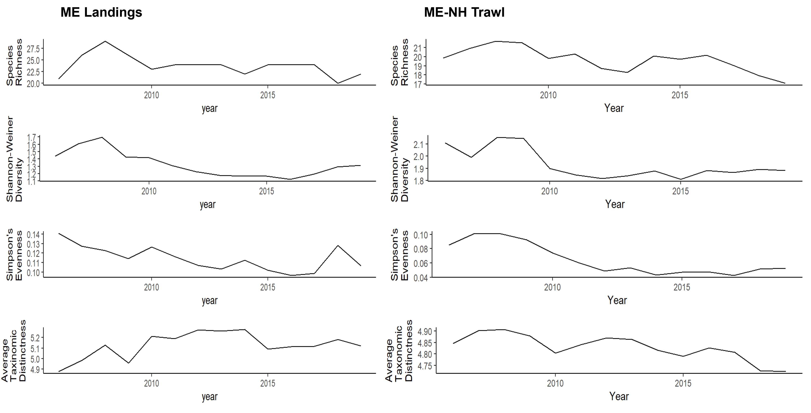

Understanding climate impacts on the Maine coastal fish and invertebrate community through synthesis of the Maine-New Hampshire Inshore Trawl Survey
Lisa Kerr 1 , Kathy Mills 1, Riley Young Morse 1 , Rebecca Peters 2 , Andrew Allyn 1, Jerelle Jesse 1, Ashley Weston 1
1 Gulf of Maine Research Institute
350 Commercial Street
Portland, ME 04101
2 Maine Department of Marine Resources
194 McKown Point Road
West Boothbay Harbor, ME 04575
Funding provided by Maine Sea Grant
Project Description
The overarching goal of this research is to synthesize data collected through the Maine-New Hampshire Inshore Trawl Survey to understand how climate change, fishing, and other environmental drivers are impacting key fish and invertebrate communities in coastal Maine waters.
The ME-NH inshore trawl survey samples in 5 Regions and 4 depth strata from the MA-NH border to the ME-Canada.

The ME-NH survey can be compared to the MDMF and NEFSC surveys which provide larger spatial coverage and a longer time series.


Analysis
Objective 1: Analyze changes in biodiversity in space and time and evaluate associations with environmental factors and fishing
Biodiversity metrics


GAMMs


Objective 2: Identify species groups and assess changes in habitat suitability if functional groups and communities in space and time
NMDS
Functional Groups 
Top species

Analysis of variance


Environmental relationships (linear and non-linear approaches)


Objective 3: Analyze joint distribution of key predator-prey species within the community, with a particular focus on lobster and cod
Objective 4: Evaluate how ecosystem changes align with shifts in diversity and composition of fishery landings over time in ports along Maine’s coastline
Biodiversity metrics

Functional groups

Correlation analysis


Conclusions
- Communities are changing over time in Maine waters
- Environmental factors are playing a key role in those changes
- Temperature is the largest contributing factor
- Maine inshore waters match up well with offshore signal for biodiversity indices and environmental effects
- Maine landings are missing a large part of community structure with the piscivores functional group
- There is a benefit to using shorter time series surveys when put in context of a longer timeline and larger spatial coverage
- see tabs for more indepth analysis and figures
Contact:
Jerelle Jesse (jjesse@gmri.org)
Andrew Allyn (aallyn@gmri.org)